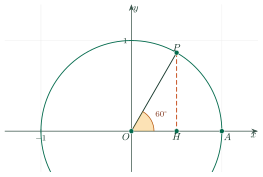

Trigonometric Ratios of Angles from 0° to 180°Giá trị lượng giác của một góc từ 0° đến 180°
Grade 10 · Topic: Basic TrigonometryLớp 10 · Chủ đề: Hệ thức lượng trong tam giác
1Lesson IntroductionGiới thiệu bài học
Learning goalsMục tiêu bài học
By the end of this lesson you can:
Sau bài học này, em có thể:
define \(\sin,\cos,\tan,\cot\) of an angle from \(0^\circ\) to \(180^\circ\);
nhận biết sin (sin của góc), cos (cos của góc), tan (tang của góc), cot (cotang của góc) của góc từ \(0^\circ\) đến \(180^\circ\);
remember the values at special angles;
nhớ giá trị lượng giác của các góc đặc biệt;
use supplementary angles and the basic identities;
dùng hai góc bù nhau và các đẳng thức (hệ thức) cơ bản;
solve simple geometry and real-life problems.
giải bài toán hình học và thực tế đơn giản.
2Mathematical VocabularyTừ vựng Toán học
unit semicircle – the upper half of the circle with centre \(O\) and radius 1.
nửa đường tròn đơn vị – nửa trên của đường tròn tâm \(O\), bán kính 1.
sine – the \(y\)-coordinate of the point on the unit semicircle.
sin (sin của góc) – tung độ của điểm trên nửa đường tròn đơn vị.
cosine – the \(x\)-coordinate of the point on the unit semicircle.
cos (cos của góc) – hoành độ của điểm trên nửa đường tròn đơn vị.
tangent – \(\sin\alpha\) divided by \(\cos\alpha\).
tan (tang của góc) – \(\sin\alpha\) chia \(\cos\alpha\) (khi \(\cos\alpha\ne0\)).
cotangent – \(\cos\alpha\) divided by \(\sin\alpha\).
cot (cotang của góc) – \(\cos\alpha\) chia \(\sin\alpha\) (khi \(\sin\alpha\ne0\)).
supplementary angles – two angles whose sum is \(180^\circ\).
hai góc bù nhau – hai góc có tổng bằng \(180^\circ\).
obtuse angle – an angle between \(90^\circ\) and \(180^\circ\).
góc tù – góc lớn hơn \(90^\circ\) và nhỏ hơn \(180^\circ\).
identity – an equation that is true for every allowed value.
đẳng thức (hệ thức) – đẳng thức đúng với mọi giá trị cho phép.
3Useful English PhrasesCụm từ tiếng Anh thường gặp
Find the value of \(\sin 120^\circ\).
Tính giá trị của \(\sin 120^\circ\).
supplementary angles
hai góc bù nhau
Find the angle \(\alpha\).
Tìm góc \(\alpha\).
is defined / undefined
xác định / không xác định
4Prerequisite ReviewÔn tập kiến thức nền
In a right triangle: \(\sin\alpha=\dfrac{\text{opposite}}{\text{hypotenuse}}\), \(\cos\alpha=\dfrac{\text{adjacent}}{\text{hypotenuse}}\), \(\tan\alpha=\dfrac{\text{opposite}}{\text{adjacent}}\) for acute angles.
Trong tam giác vuông, với góc nhọn: \(\sin\alpha=\dfrac{\text{đối}}{\text{huyền}}\), \(\cos\alpha=\dfrac{\text{kề}}{\text{huyền}}\), \(\tan\alpha=\dfrac{\text{đối}}{\text{kề}}\).
5TheoryLý thuyết
5.1 Trigonometric ratios of an angle \(0^\circ\le\alpha\le180^\circ\)Giá trị lượng giác của góc \(\alpha\) (\(0^\circ\le\alpha\le180^\circ\))
DefinitionĐịnh nghĩa
Take the point \(P(x_0;y_0)\) on the unit semicircle with \(\widehat{AOP}=\alpha\). Then \(\sin\alpha=y_0\), \(\cos\alpha=x_0\), \(\tan\alpha=\dfrac{y_0}{x_0}\) (\(\alpha\ne90^\circ\)), \(\cot\alpha=\dfrac{x_0}{y_0}\) (\(\alpha\ne0^\circ,180^\circ\)).
Lấy điểm \(P(x_0;y_0)\) trên nửa đường tròn đơn vị sao cho \(\widehat{AOP}=\alpha\). Khi đó \(\sin\alpha=y_0\), \(\cos\alpha=x_0\), \(\tan\alpha=\dfrac{y_0}{x_0}\) (\(\alpha\ne90^\circ\)), \(\cot\alpha=\dfrac{x_0}{y_0}\) (\(\alpha\ne0^\circ,180^\circ\)).

SignsDấu
\(\sin\alpha\ge0\) for all \(\alpha\) in \([0^\circ,180^\circ]\). For an obtuse angle: \(\cos\alpha\lt0\), \(\tan\alpha\lt0\), \(\cot\alpha\lt0\).
\(\sin\alpha\ge0\) với mọi \(\alpha\in[0^\circ,180^\circ]\). Với góc tù: \(\cos\alpha\lt0\), \(\tan\alpha\lt0\), \(\cot\alpha\lt0\).
5.2 Special valuesGiá trị lượng giác của các góc đặc biệt
| \(\alpha\) | \(\sin\alpha\) | \(\cos\alpha\) | \(\tan\alpha\) | \(\cot\alpha\) |
|---|---|---|---|---|
| \(0^\circ\) | \(0\) | \(1\) | \(0\) | — |
| \(30^\circ\) | \(\dfrac{1}{2}\) | \(\dfrac{\sqrt3}{2}\) | \(\dfrac{\sqrt3}{3}\) | \(\sqrt3\) |
| \(45^\circ\) | \(\dfrac{\sqrt2}{2}\) | \(\dfrac{\sqrt2}{2}\) | \(1\) | \(1\) |
| \(60^\circ\) | \(\dfrac{\sqrt3}{2}\) | \(\dfrac{1}{2}\) | \(\sqrt3\) | \(\dfrac{\sqrt3}{3}\) |
| \(90^\circ\) | \(1\) | \(0\) | — | \(0\) |
| \(120^\circ\) | \(\dfrac{\sqrt3}{2}\) | \(-\dfrac{1}{2}\) | \(-\sqrt3\) | \(-\dfrac{\sqrt3}{3}\) |
| \(135^\circ\) | \(\dfrac{\sqrt2}{2}\) | \(-\dfrac{\sqrt2}{2}\) | \(-1\) | \(-1\) |
| \(150^\circ\) | \(\dfrac{1}{2}\) | \(-\dfrac{\sqrt3}{2}\) | \(-\dfrac{\sqrt3}{3}\) | \(-\sqrt3\) |
| \(180^\circ\) | \(0\) | \(-1\) | \(0\) | — |
5.3 Supplementary angles and identitiesHai góc bù nhau và các hệ thức cơ bản
Supplementary anglesHai góc bù nhau
Basic identitiesCác hệ thức cơ bản
Watch out!Lưu ý
\(\tan90^\circ\) is undefined, and \(\cot0^\circ\), \(\cot180^\circ\) are undefined. Use a calculator in degree mode.
\(\tan90^\circ\) không xác định; \(\cot0^\circ\), \(\cot180^\circ\) cũng không xác định. Dùng máy tính ở chế độ độ.
6Worked ExamplesVí dụ có lời giải
ExampleVí dụ 1BasicCơ bản – Special valuesGiá trị đặc biệt
Find \(\sin120^\circ\), \(\cos135^\circ\) and \(\tan150^\circ\).
Tính \(\sin120^\circ\), \(\cos135^\circ\) và \(\tan150^\circ\).
Analysis: Write the angle as \(180^\circ-\beta\) with \(\beta\) acute.
Phân tích: Viết góc dạng \(180^\circ-\beta\) với \(\beta\) nhọn.
\(\sin120^\circ=\sin60^\circ=\dfrac{\sqrt3}{2}\).
\(\sin120^\circ=\sin60^\circ=\dfrac{\sqrt3}{2}\).
\(\cos135^\circ=-\cos45^\circ=-\dfrac{\sqrt2}{2}\).
\(\cos135^\circ=-\cos45^\circ=-\dfrac{\sqrt2}{2}\).
\(\tan150^\circ=-\tan30^\circ=-\dfrac{\sqrt3}{3}\).
\(\tan150^\circ=-\tan30^\circ=-\dfrac{\sqrt3}{3}\).
\(\dfrac{\sqrt3}{2},\ -\dfrac{\sqrt2}{2},\ -\dfrac{\sqrt3}{3}\).
\(\dfrac{\sqrt3}{2},\ -\dfrac{\sqrt2}{2},\ -\dfrac{\sqrt3}{3}\).
ExampleVí dụ 2BasicCơ bản – From sine to cosineTừ sin tính cos
Angle \(\alpha\) is obtuse and \(\sin\alpha=\dfrac35\). Find \(\cos\alpha\) and \(\tan\alpha\).
Góc \(\alpha\) tù và \(\sin\alpha=\dfrac35\). Tính \(\cos\alpha\) và \(\tan\alpha\).
Analysis: Use \(\sin^2+\cos^2=1\) and the sign for an obtuse angle.
Phân tích: Dùng \(\sin^2+\cos^2=1\) và dấu của góc tù.
\(\cos^2\alpha=1-\dfrac{9}{25}=\dfrac{16}{25}\), so \(\cos\alpha=\pm\dfrac45\).
\(\cos^2\alpha=1-\dfrac{9}{25}=\dfrac{16}{25}\) nên \(\cos\alpha=\pm\dfrac45\).
The angle is obtuse, so \(\cos\alpha=-\dfrac45\) and \(\tan\alpha=\dfrac{3/5}{-4/5}=-\dfrac34\).
Góc tù nên \(\cos\alpha=-\dfrac45\) và \(\tan\alpha=\dfrac{3/5}{-4/5}=-\dfrac34\).
\(\cos\alpha=-\dfrac45,\ \tan\alpha=-\dfrac34\).
\(\cos\alpha=-\dfrac45,\ \tan\alpha=-\dfrac34\).
ExampleVí dụ 3IntermediateTrung bình – Evaluate an expressionTính giá trị biểu thức
Compute \(A=\sin30^\circ+\cos120^\circ+\tan135^\circ\).
Tính \(A=\sin30^\circ+\cos120^\circ+\tan135^\circ\).
Analysis: Replace each value from the table.
Phân tích: Thay từng giá trị từ bảng.
\(\sin30^\circ=\dfrac12\), \(\cos120^\circ=-\dfrac12\), \(\tan135^\circ=-1\).
\(\sin30^\circ=\dfrac12\), \(\cos120^\circ=-\dfrac12\), \(\tan135^\circ=-1\).
\(A=\dfrac12-\dfrac12-1=-1\).
\(A=\dfrac12-\dfrac12-1=-1\).
\(A=-1\).
\(A=-1\).
ExampleVí dụ 4IntermediateTrung bình – Using \(\tan\alpha\)Dùng giá trị của \(\tan\alpha\)
Given \(\tan\alpha=3\), find \(B=\dfrac{2\sin\alpha+\cos\alpha}{\sin\alpha-\cos\alpha}\).
Cho \(\tan\alpha=3\). Tính \(B=\dfrac{2\sin\alpha+\cos\alpha}{\sin\alpha-\cos\alpha}\).
Analysis: Divide the numerator and the denominator by \(\cos\alpha\ne0\).
Phân tích: Chia cả tử và mẫu cho \(\cos\alpha\ne0\).
\(B=\dfrac{2\tan\alpha+1}{\tan\alpha-1}=\dfrac{2\cdot3+1}{3-1}=\dfrac72\).
\(B=\dfrac{2\tan\alpha+1}{\tan\alpha-1}=\dfrac{2\cdot3+1}{3-1}=\dfrac72\).
\(B=\dfrac72\).
\(B=\dfrac72\).
ExampleVí dụ 5AdvancedNâng cao – A real-life problemBài toán thực tế
A kite string is 40 m long and makes an angle of \(60^\circ\) with the ground. Find the height of the kite, and the horizontal distance from the kite to the person.
Dây diều dài 40 m, tạo với mặt đất góc \(60^\circ\). Tính độ cao của diều và khoảng cách theo phương ngang từ diều đến người thả.
Analysis: The string is the hypotenuse of a right triangle.
Phân tích: Sợi dây là cạnh huyền của tam giác vuông.
Height \(=40\sin60^\circ=40\cdot\dfrac{\sqrt3}{2}=20\sqrt3\approx34.6\) m.
Độ cao \(=40\sin60^\circ=40\cdot\dfrac{\sqrt3}{2}=20\sqrt3\approx34{,}6\) m.
Horizontal distance \(=40\cos60^\circ=20\) m.
Khoảng cách ngang \(=40\cos60^\circ=20\) m.
About 34.6 m high and 20 m away horizontally.
Cao khoảng 34,6 m; cách theo phương ngang 20 m.
7PracticeBài tập luyện tập
A. Multiple ChoiceA. Trắc nghiệm nhiều lựa chọn
What is \(\sin120^\circ\)?
Giá trị của \(\sin120^\circ\) là bao nhiêu?
Answer: a. Use the table: \(\sin120^\circ=\dfrac{\sqrt3}{2}\).
Đáp án a. Dùng bảng: \(\sin120^\circ=\dfrac{\sqrt3}{2}\).
Angle \(\alpha\) is obtuse, \(\sin\alpha=\dfrac{3}{5}\). Find \(\cos\alpha\).
Góc \(\alpha\) tù, \(\sin\alpha=\dfrac{3}{5}\). Tính \(\cos\alpha\).
Answer: d. Use \(\cos^2\alpha=1-\sin^2\alpha\); the angle is obtuse so the cosine is negative.
Đáp án d. Dùng \(\cos^2\alpha=1-\sin^2\alpha\); góc tù nên cos âm.
Given \(\tan\alpha=2\), find \(\dfrac{\sin\alpha+\cos\alpha}{\sin\alpha-\cos\alpha}\).
Cho \(\tan\alpha=2\). Tính \(\dfrac{\sin\alpha+\cos\alpha}{\sin\alpha-\cos\alpha}\).
Answer: c. Divide by \(\cos\alpha\): \(\dfrac{\tan\alpha+1}{\tan\alpha-1}=3\).
Đáp án c. Chia cho \(\cos\alpha\): \(\dfrac{\tan\alpha+1}{\tan\alpha-1}=3\).
B. True or FalseB. Đúng hoặc sai
The equality \(\cos(180^\circ-40^\circ)=\cos40^\circ\) is true.
Đẳng thức \(\cos(180^\circ-40^\circ)=\cos40^\circ\) là đúng.
Supplementary angles: sin is equal, the others change sign.
Hai góc bù: sin bằng nhau, các giá trị khác đổi dấu.
The equality \(\sin^250^\circ+\cos^250^\circ=1\) is true.
Đẳng thức \(\sin^250^\circ+\cos^250^\circ=1\) là đúng.
\(\sin^2\alpha+\cos^2\alpha=1\) for every angle.
\(\sin^2\alpha+\cos^2\alpha=1\) với mọi góc.
C. Short AnswerC. Trả lời ngắn
Compute \(\sin30^\circ+\cos60^\circ\).
Tính \(\sin30^\circ+\cos60^\circ\).
Enter a number.
Nhập một số.
Substitute special values: 1.
Thay giá trị đặc biệt: 1.
Find the obtuse angle \(\alpha\) (in degrees) with \(\sin\alpha=\dfrac12\).
Tìm góc tù \(\alpha\) (đơn vị độ) thỏa \(\sin\alpha=\dfrac12\).
Enter a number.
Nhập một số.
Use the table: \(\alpha=150^\circ\).
Dùng bảng: \(\alpha=150^\circ\).
A. Multiple ChoiceA. Trắc nghiệm nhiều lựa chọn
What is \(\cos135^\circ\)?
Giá trị của \(\cos135^\circ\) là bao nhiêu?
Answer: b. Use the table: \(\cos135^\circ=-\dfrac{\sqrt2}{2}\).
Đáp án b. Dùng bảng: \(\cos135^\circ=-\dfrac{\sqrt2}{2}\).
Angle \(\alpha\) is obtuse, \(\sin\alpha=\dfrac{5}{13}\). Find \(\cos\alpha\).
Góc \(\alpha\) tù, \(\sin\alpha=\dfrac{5}{13}\). Tính \(\cos\alpha\).
Answer: b. Use \(\cos^2\alpha=1-\sin^2\alpha\); the angle is obtuse so the cosine is negative.
Đáp án b. Dùng \(\cos^2\alpha=1-\sin^2\alpha\); góc tù nên cos âm.
Given \(\tan\alpha=3\), find \(\dfrac{\sin\alpha+\cos\alpha}{\sin\alpha-\cos\alpha}\).
Cho \(\tan\alpha=3\). Tính \(\dfrac{\sin\alpha+\cos\alpha}{\sin\alpha-\cos\alpha}\).
Answer: c. Divide by \(\cos\alpha\): \(\dfrac{\tan\alpha+1}{\tan\alpha-1}=2\).
Đáp án c. Chia cho \(\cos\alpha\): \(\dfrac{\tan\alpha+1}{\tan\alpha-1}=2\).
B. True or FalseB. Đúng hoặc sai
The equality \(\tan(180^\circ-25^\circ)=-\tan25^\circ\) is true.
Đẳng thức \(\tan(180^\circ-25^\circ)=-\tan25^\circ\) là đúng.
Supplementary angles: sin is equal, the others change sign.
Hai góc bù: sin bằng nhau, các giá trị khác đổi dấu.
The equality \(1+\tan^230^\circ=\dfrac{1}{\sin^230^\circ}\) is true.
Đẳng thức \(1+\tan^230^\circ=\dfrac{1}{\sin^230^\circ}\) là đúng.
The correct identity is \(1+\tan^2\alpha=\dfrac{1}{\cos^2\alpha}\).
Hệ thức đúng là \(1+\tan^2\alpha=\dfrac{1}{\cos^2\alpha}\).
C. Short AnswerC. Trả lời ngắn
Compute \(\sin150^\circ+\cos120^\circ\).
Tính \(\sin150^\circ+\cos120^\circ\).
Enter a number.
Nhập một số.
Substitute special values: 0.
Thay giá trị đặc biệt: 0.
Find the obtuse angle \(\alpha\) (in degrees) with \(\cos\alpha=-\dfrac12\).
Tìm góc tù \(\alpha\) (đơn vị độ) thỏa \(\cos\alpha=-\dfrac12\).
Enter a number.
Nhập một số.
Use the table: \(\alpha=120^\circ\).
Dùng bảng: \(\alpha=120^\circ\).
A. Multiple ChoiceA. Trắc nghiệm nhiều lựa chọn
What is \(\tan150^\circ\)?
Giá trị của \(\tan150^\circ\) là bao nhiêu?
Answer: b. Use the table: \(\tan150^\circ=-\dfrac{\sqrt3}{3}\).
Đáp án b. Dùng bảng: \(\tan150^\circ=-\dfrac{\sqrt3}{3}\).
Angle \(\alpha\) is obtuse, \(\sin\alpha=\dfrac{8}{17}\). Find \(\cos\alpha\).
Góc \(\alpha\) tù, \(\sin\alpha=\dfrac{8}{17}\). Tính \(\cos\alpha\).
Answer: b. Use \(\cos^2\alpha=1-\sin^2\alpha\); the angle is obtuse so the cosine is negative.
Đáp án b. Dùng \(\cos^2\alpha=1-\sin^2\alpha\); góc tù nên cos âm.
Given \(\tan\alpha=5\), find \(\dfrac{\sin\alpha+\cos\alpha}{\sin\alpha-\cos\alpha}\).
Cho \(\tan\alpha=5\). Tính \(\dfrac{\sin\alpha+\cos\alpha}{\sin\alpha-\cos\alpha}\).
Answer: b. Divide by \(\cos\alpha\): \(\dfrac{\tan\alpha+1}{\tan\alpha-1}=\dfrac{3}{2}\).
Đáp án b. Chia cho \(\cos\alpha\): \(\dfrac{\tan\alpha+1}{\tan\alpha-1}=\dfrac{3}{2}\).
B. True or FalseB. Đúng hoặc sai
The equality \(\sin(180^\circ-70^\circ)=\sin70^\circ\) is true.
Đẳng thức \(\sin(180^\circ-70^\circ)=\sin70^\circ\) là đúng.
Supplementary angles: sin is equal, the others change sign.
Hai góc bù: sin bằng nhau, các giá trị khác đổi dấu.
The equality \(1+\cot^260^\circ=\dfrac{1}{\sin^260^\circ}\) is true.
Đẳng thức \(1+\cot^260^\circ=\dfrac{1}{\sin^260^\circ}\) là đúng.
This is a correct identity.
Đây là một hệ thức đúng.
C. Short AnswerC. Trả lời ngắn
Compute \(2\sin90^\circ+\cos180^\circ\).
Tính \(2\sin90^\circ+\cos180^\circ\).
Enter a number.
Nhập một số.
Substitute special values: 1.
Thay giá trị đặc biệt: 1.
Find the obtuse angle \(\alpha\) (in degrees) with \(\tan\alpha=-1\).
Tìm góc tù \(\alpha\) (đơn vị độ) thỏa \(\tan\alpha=-1\).
Enter a number.
Nhập một số.
Use the table: \(\alpha=135^\circ\).
Dùng bảng: \(\alpha=135^\circ\).
D. Self-practice: Multiple ChoiceD. Tự luyện: trắc nghiệm
What is \(\cos 135^\circ\)?
Giá trị của \(\cos 135^\circ\) là bao nhiêu?
Answer: b. From the table of special values: \(\cos 135^\circ=-\dfrac{\sqrt2}{2}\).
Đáp án b. Theo bảng giá trị đặc biệt: \(\cos 135^\circ=-\dfrac{\sqrt2}{2}\).
Angle \(\alpha\) is obtuse and \(\sin\alpha=\dfrac{8}{17}\). Find \(\cos\alpha\).
Góc \(\alpha\) tù và \(\sin\alpha=\dfrac{8}{17}\). Tính \(\cos\alpha\).
Answer: d. \(\cos^2\alpha=1-\sin^2\alpha=\dfrac{225}{289}\), and \(\cos\alpha\lt0\) for an obtuse angle: \(\cos\alpha=-\dfrac{15}{17}\).
Đáp án d. \(\cos^2\alpha=1-\sin^2\alpha=\dfrac{225}{289}\), góc tù nên \(\cos\alpha\lt0\): \(\cos\alpha=-\dfrac{15}{17}\).
Given \(\tan\alpha=3\), find \(\dfrac{\sin\alpha+3\cos\alpha}{\sin\alpha+2\cos\alpha}\).
Cho \(\tan\alpha=3\). Tính \(\dfrac{\sin\alpha+3\cos\alpha}{\sin\alpha+2\cos\alpha}\).
Answer: c. Divide the numerator and the denominator by \(\cos\alpha\): \(\dfrac{1\cdot3+3}{3+(2)}=\dfrac{6}{5}\).
Đáp án c. Chia tử và mẫu cho \(\cos\alpha\): \(\dfrac{1\cdot3+3}{3+(2)}=\dfrac{6}{5}\).
Simplify \(\cot(180^\circ-55^\circ)\).
Rút gọn \(\cot(180^\circ-55^\circ)\).
Answer: c. For supplementary angles: \(\sin\) is the same, \(\cos,\tan,\cot\) change sign.
Đáp án c. Hai góc bù nhau: \(\sin\) bằng nhau, \(\cos,\tan,\cot\) đổi dấu.
Find the angle \(\alpha\) with \(\cos\alpha=-\dfrac{1}{2}\).
Tìm góc \(\alpha\) biết \(\cos\alpha=-\dfrac{1}{2}\).
Answer: c. Use the table of special values: \(\alpha=120^\circ\).
Đáp án c. Dùng bảng giá trị đặc biệt: \(\alpha=120^\circ\).
A ladder 10 m long leans on a wall and makes an angle of \(30^\circ\) with the ground. How high does it reach (in metres)?
Một chiếc thang dài 10 m dựa vào tường, tạo với mặt đất góc \(30^\circ\). Thang chạm tường ở độ cao bao nhiêu mét?
Answer: c. Height \(=10\sin 30^\circ=5\) m.
Đáp án c. Độ cao \(=10\sin 30^\circ=5\) m.
What is \(\sin 45^\circ\)?
Giá trị của \(\sin 45^\circ\) là bao nhiêu?
Answer: d. From the table of special values: \(\sin 45^\circ=\dfrac{\sqrt2}{2}\).
Đáp án d. Theo bảng giá trị đặc biệt: \(\sin 45^\circ=\dfrac{\sqrt2}{2}\).
Angle \(\alpha\) is obtuse and \(\sin\alpha=\dfrac{20}{29}\). Find \(\cos\alpha\).
Góc \(\alpha\) tù và \(\sin\alpha=\dfrac{20}{29}\). Tính \(\cos\alpha\).
Answer: c. \(\cos^2\alpha=1-\sin^2\alpha=\dfrac{441}{841}\), and \(\cos\alpha\lt0\) for an obtuse angle: \(\cos\alpha=-\dfrac{21}{29}\).
Đáp án c. \(\cos^2\alpha=1-\sin^2\alpha=\dfrac{441}{841}\), góc tù nên \(\cos\alpha\lt0\): \(\cos\alpha=-\dfrac{21}{29}\).
D. Self-practice: Multiple ChoiceD. Tự luyện: trắc nghiệm
What is \(\cot 150^\circ\)?
Giá trị của \(\cot 150^\circ\) là bao nhiêu?
Answer: d. From the table of special values: \(\cot 150^\circ=-\sqrt3\).
Đáp án d. Theo bảng giá trị đặc biệt: \(\cot 150^\circ=-\sqrt3\).
Angle \(\alpha\) is obtuse and \(\sin\alpha=\dfrac{5}{13}\). Find \(\cos\alpha\).
Góc \(\alpha\) tù và \(\sin\alpha=\dfrac{5}{13}\). Tính \(\cos\alpha\).
Answer: a. \(\cos^2\alpha=1-\sin^2\alpha=\dfrac{144}{169}\), and \(\cos\alpha\lt0\) for an obtuse angle: \(\cos\alpha=-\dfrac{12}{13}\).
Đáp án a. \(\cos^2\alpha=1-\sin^2\alpha=\dfrac{144}{169}\), góc tù nên \(\cos\alpha\lt0\): \(\cos\alpha=-\dfrac{12}{13}\).
Given \(\tan\alpha=5\), find \(\dfrac{2\sin\alpha+3\cos\alpha}{\sin\alpha-\cos\alpha}\).
Cho \(\tan\alpha=5\). Tính \(\dfrac{2\sin\alpha+3\cos\alpha}{\sin\alpha-\cos\alpha}\).
Answer: a. Divide the numerator and the denominator by \(\cos\alpha\): \(\dfrac{2\cdot5+3}{5+(-1)}=\dfrac{13}{4}\).
Đáp án a. Chia tử và mẫu cho \(\cos\alpha\): \(\dfrac{2\cdot5+3}{5+(-1)}=\dfrac{13}{4}\).
Simplify \(\cot(180^\circ-80^\circ)\).
Rút gọn \(\cot(180^\circ-80^\circ)\).
Answer: d. For supplementary angles: \(\sin\) is the same, \(\cos,\tan,\cot\) change sign.
Đáp án d. Hai góc bù nhau: \(\sin\) bằng nhau, \(\cos,\tan,\cot\) đổi dấu.
Find the angle \(\alpha\) with \(\cos\alpha=-\dfrac{\sqrt3}{2}\).
Tìm góc \(\alpha\) biết \(\cos\alpha=-\dfrac{\sqrt3}{2}\).
Answer: b. Use the table of special values: \(\alpha=150^\circ\).
Đáp án b. Dùng bảng giá trị đặc biệt: \(\alpha=150^\circ\).
A ladder 12 m long leans on a wall and makes an angle of \(45^\circ\) with the ground. How high does it reach (in metres)?
Một chiếc thang dài 12 m dựa vào tường, tạo với mặt đất góc \(45^\circ\). Thang chạm tường ở độ cao bao nhiêu mét?
Answer: a. Height \(=12\sin 45^\circ=\dfrac{12\sqrt2}{2}\) m.
Đáp án a. Độ cao \(=12\sin 45^\circ=\dfrac{12\sqrt2}{2}\) m.
What is \(\tan 120^\circ\)?
Giá trị của \(\tan 120^\circ\) là bao nhiêu?
Answer: a. From the table of special values: \(\tan 120^\circ=-\sqrt3\).
Đáp án a. Theo bảng giá trị đặc biệt: \(\tan 120^\circ=-\sqrt3\).
Angle \(\alpha\) is obtuse and \(\sin\alpha=\dfrac{3}{5}\). Find \(\cos\alpha\).
Góc \(\alpha\) tù và \(\sin\alpha=\dfrac{3}{5}\). Tính \(\cos\alpha\).
Answer: a. \(\cos^2\alpha=1-\sin^2\alpha=\dfrac{16}{25}\), and \(\cos\alpha\lt0\) for an obtuse angle: \(\cos\alpha=-\dfrac{4}{5}\).
Đáp án a. \(\cos^2\alpha=1-\sin^2\alpha=\dfrac{16}{25}\), góc tù nên \(\cos\alpha\lt0\): \(\cos\alpha=-\dfrac{4}{5}\).
D. Self-practice: Multiple ChoiceD. Tự luyện: trắc nghiệm
What is \(\sin 150^\circ\)?
Giá trị của \(\sin 150^\circ\) là bao nhiêu?
Answer: c. From the table of special values: \(\sin 150^\circ=\dfrac{1}{2}\).
Đáp án c. Theo bảng giá trị đặc biệt: \(\sin 150^\circ=\dfrac{1}{2}\).
Angle \(\alpha\) is obtuse and \(\sin\alpha=\dfrac{4}{5}\). Find \(\cos\alpha\).
Góc \(\alpha\) tù và \(\sin\alpha=\dfrac{4}{5}\). Tính \(\cos\alpha\).
Answer: b. \(\cos^2\alpha=1-\sin^2\alpha=\dfrac{9}{25}\), and \(\cos\alpha\lt0\) for an obtuse angle: \(\cos\alpha=-\dfrac{3}{5}\).
Đáp án b. \(\cos^2\alpha=1-\sin^2\alpha=\dfrac{9}{25}\), góc tù nên \(\cos\alpha\lt0\): \(\cos\alpha=-\dfrac{3}{5}\).
Given \(\tan\alpha=7\), find \(\dfrac{2\sin\alpha+3\cos\alpha}{\sin\alpha-2\cos\alpha}\).
Cho \(\tan\alpha=7\). Tính \(\dfrac{2\sin\alpha+3\cos\alpha}{\sin\alpha-2\cos\alpha}\).
Answer: c. Divide the numerator and the denominator by \(\cos\alpha\): \(\dfrac{2\cdot7+3}{7+(-2)}=\dfrac{17}{5}\).
Đáp án c. Chia tử và mẫu cho \(\cos\alpha\): \(\dfrac{2\cdot7+3}{7+(-2)}=\dfrac{17}{5}\).
Simplify \(\cos(180^\circ-40^\circ)\).
Rút gọn \(\cos(180^\circ-40^\circ)\).
Answer: b. For supplementary angles: \(\sin\) is the same, \(\cos,\tan,\cot\) change sign.
Đáp án b. Hai góc bù nhau: \(\sin\) bằng nhau, \(\cos,\tan,\cot\) đổi dấu.
Find the angle \(\alpha\) with \(\tan\alpha=-1\).
Tìm góc \(\alpha\) biết \(\tan\alpha=-1\).
Answer: c. Use the table of special values: \(\alpha=135^\circ\).
Đáp án c. Dùng bảng giá trị đặc biệt: \(\alpha=135^\circ\).
A ladder 6 m long leans on a wall and makes an angle of \(45^\circ\) with the ground. How high does it reach (in metres)?
Một chiếc thang dài 6 m dựa vào tường, tạo với mặt đất góc \(45^\circ\). Thang chạm tường ở độ cao bao nhiêu mét?
Answer: d. Height \(=6\sin 45^\circ=\dfrac{6\sqrt2}{2}\) m.
Đáp án d. Độ cao \(=6\sin 45^\circ=\dfrac{6\sqrt2}{2}\) m.
What is \(\sin 120^\circ\)?
Giá trị của \(\sin 120^\circ\) là bao nhiêu?
Answer: a. From the table of special values: \(\sin 120^\circ=\dfrac{\sqrt3}{2}\).
Đáp án a. Theo bảng giá trị đặc biệt: \(\sin 120^\circ=\dfrac{\sqrt3}{2}\).
Angle \(\alpha\) is obtuse and \(\sin\alpha=\dfrac{7}{25}\). Find \(\cos\alpha\).
Góc \(\alpha\) tù và \(\sin\alpha=\dfrac{7}{25}\). Tính \(\cos\alpha\).
Answer: a. \(\cos^2\alpha=1-\sin^2\alpha=\dfrac{576}{625}\), and \(\cos\alpha\lt0\) for an obtuse angle: \(\cos\alpha=-\dfrac{24}{25}\).
Đáp án a. \(\cos^2\alpha=1-\sin^2\alpha=\dfrac{576}{625}\), góc tù nên \(\cos\alpha\lt0\): \(\cos\alpha=-\dfrac{24}{25}\).
8Common MistakesLỗi thường gặp
Wrong sign for an obtuse angle. \(\cos,\tan,\cot\) are negative when \(90^\circ\lt\alpha\lt180^\circ\).
Sai dấu với góc tù. \(\cos,\tan,\cot\) âm khi \(90^\circ\lt\alpha\lt180^\circ\).
Mixing \(\sin\) and \(\cos\) in \(180^\circ-\alpha\). Only \(\sin\) keeps its sign.
Nhầm \(\sin\) với \(\cos\) ở góc \(180^\circ-\alpha\). Chỉ \(\sin\) giữ nguyên dấu.
Using \(\tan90^\circ\). It is undefined.
Dùng \(\tan90^\circ\). Giá trị này không xác định.
Calculator in radian mode. Switch to degrees.
Máy tính ở chế độ radian. Hãy chuyển sang độ.
Forgetting \(\sin^2\alpha+\cos^2\alpha=1\) gives two signs. Choose the sign from the angle.
Quên \(\sin^2\alpha+\cos^2\alpha=1\) cho hai dấu. Chọn dấu theo góc.
9Lesson SummaryTổng kết
\(\sin\alpha\) and \(\cos\alpha\) are the coordinates of a point on the unit semicircle.
\(\sin\alpha\) và \(\cos\alpha\) là tung độ và hoành độ của điểm trên nửa đường tròn đơn vị.
Supplementary angles: \(\sin\) equal; \(\cos,\tan,\cot\) opposite.
Hai góc bù nhau: \(\sin\) bằng nhau; \(\cos,\tan,\cot\) đối nhau.
\(\sin^2\alpha+\cos^2\alpha=1\); \(\tan\alpha=\dfrac{\sin\alpha}{\cos\alpha}\); \(\cot\alpha=\dfrac{\cos\alpha}{\sin\alpha}\).
\(\sin^2\alpha+\cos^2\alpha=1\); \(\tan\alpha=\dfrac{\sin\alpha}{\cos\alpha}\); \(\cot\alpha=\dfrac{\cos\alpha}{\sin\alpha}\).
Remember the table of special values for \(0^\circ,30^\circ,45^\circ,60^\circ,90^\circ\).
Nhớ bảng giá trị đặc biệt của \(0^\circ,30^\circ,45^\circ,60^\circ,90^\circ\).
Key English words: sine, cosine, tangent, cotangent, supplementary angles, obtuse angle.
Từ tiếng Anh cần nhớ: sine, cosine, tangent, cotangent, supplementary angles, obtuse angle.